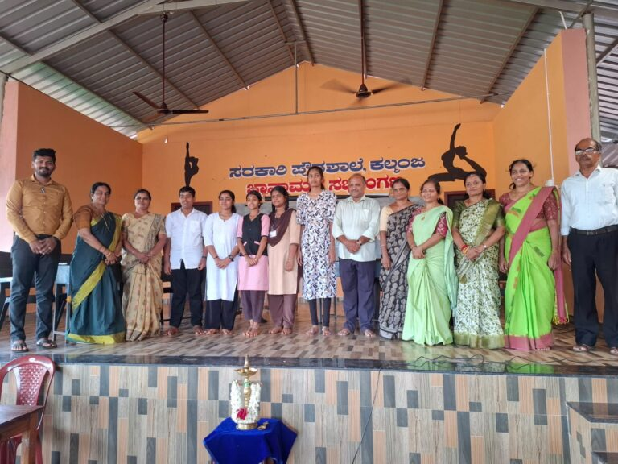
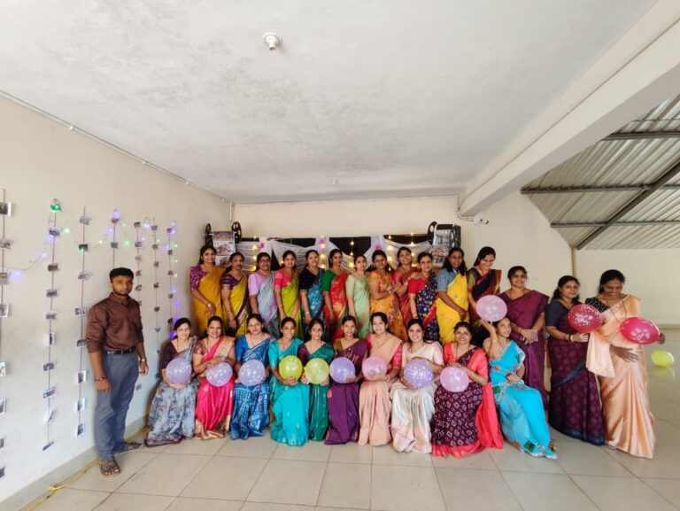
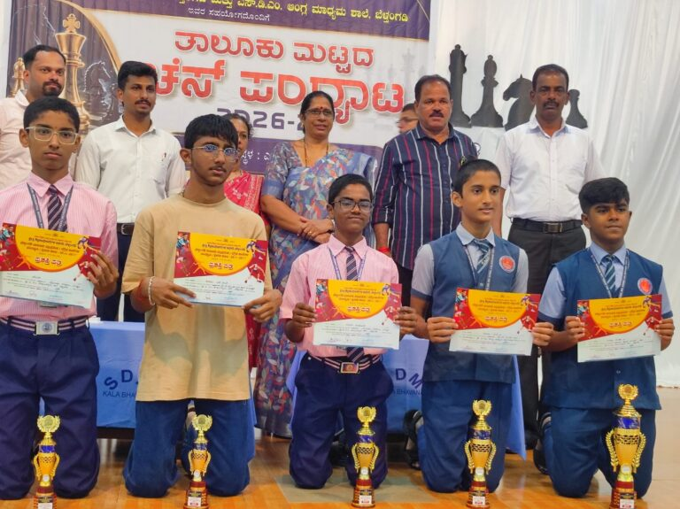

Big ideas from curious minds
Students explore science and mathematics through working models and creative thinking.
Read the storySDM Secondary School
Discover learning, celebrations and student achievements from the SDM community.
The school journal

Students explore science and mathematics through working models and creative thinking.
Read the story
A Teachers’ Day celebration planned and led by students to honour their teachers.
Read the story
Celebrating the students who represented the school at the taluk-level chess tournament.
Read the storyLet’s take the next step